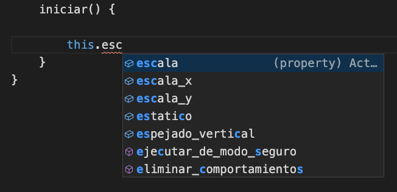
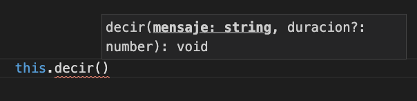
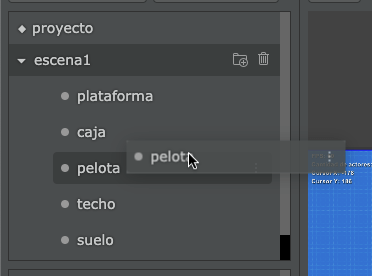
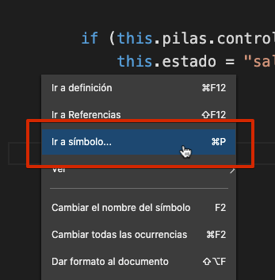
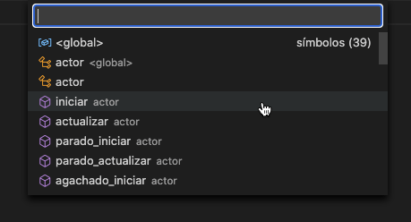

Редактор коду містить різні вбудовані можливості, які допоможуть вам швидко та зручно писати код.
У цьому розділі спробуємо узагальнити інформацію про деякі з цих можливостей.
Щоразу, коли ви пишете код, редактор коду намагатиметься передбачити, що ви пишете, щоб показати пропозиції:

Крім того, якщо ви пишете виклик методу, редактор коду покаже вам аргументи, з якими метод викликається:

У цьому разі метод "decir" приймає два аргументи: повідомлення та тривалість. Зверніть увагу, що тривалість має знак питання, який вказує на те, що цей аргумент необов’язковий.
Щоб отримати швидкі покликання на акторів, ви можете просто "перетягнути" акторів у код редактора:

Коли редактор виявить, що ви "відпустили" актора, він напише такий рядок коду ("pelota" - м'яч):
Це дуже корисно, оскільки позбавляє нас від написання цього коду.
І якщо актор, якого ми перетягуємо в редактор, є вимкненим актором, редактор розмістить на його місці цей код:
Окрім автозаповнення, редактор дозволяє нам писати швидкі фрагменти, наприклад, якщо ви напишете "observar" і натиснете клавішу "Enter", редактор автоматично доповнить цей текст:
Водночас це розташує курсор так, щоб ми могли швидко налаштувати цей рядок коду.
Інші короткі фрагменти коду, включені в редактор, наведені нижче:
pilasclonarclonar_encontrolanimarМи рекомендуємо вам спробувати написати одне з цих скорочень, щоб ознайомитися з ними, особливо з control.
Коли у нас є актор із багатьма методами, доцільно виконувати пошук замість того, щоб переглядати код вгору та вниз за допомогою смуги прокручування.
Щоб шукати методи за назвою, ви можете натиснути праву кнопку миші у редакторі та вибрати наступний параметр:

Тоді ви помітите, що з’явиться панель пошуку з усіма методами актора, просто введіть або виберіть метод, який ви бажаєте використати.

Зауважте, що ви також можете активувати цю дію, натиснувши Ctrl+P.